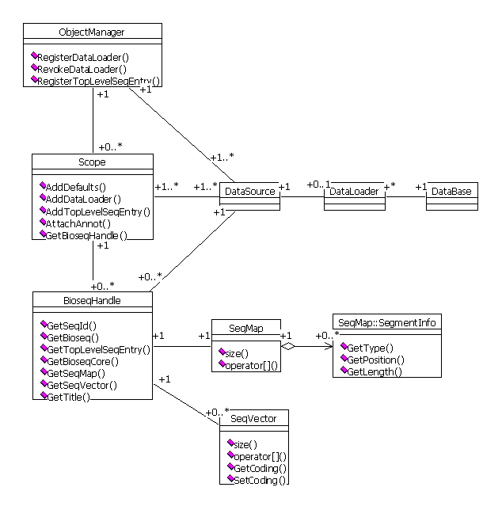
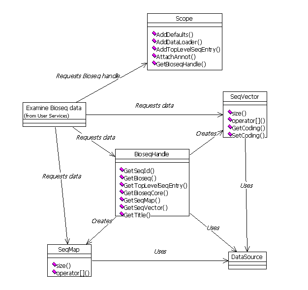

Object Manager
Class diagrams.
Associations.
One Data loader is linked to one out-of-process source of data (database).
One Scope may contain multiple Data sources. One Data source is linked to
zero or one Data loader. One Data source (or a pair of Data source + Data
loader) may belong to multiple Scopes. Once a Data source is not used (referenced)
by any scope, it may be "revoked" in Object manager and deleted. Once a
top-level Seq_entry in a given data source is not used (referenced) by any
scope, it may be deleted.

Collaborations.
Initialize Object manager.

Define a scope.
Examine bioseq data.
